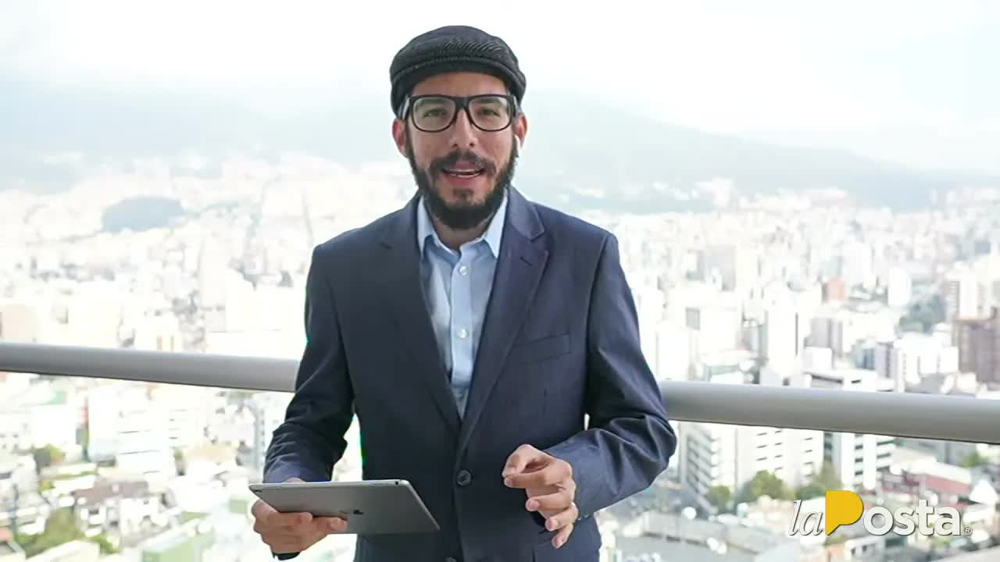
Café · La lista, primera parte
Las primeras 8.190 dosis contra el covid llegaron el 20 de enero de 2021 para médicos de primera línea y ancianos en geriátricos. Cuarenta y ocho horas después se vacunaban la primera dama en Carondelet, ministros, expresidentes, consultores y la madre del ministro de Salud. El ministro admitió que hubo gente fuera de turno y se negó a dar los nombres. La Posta los reconstruyó, hospital por hospital, y los publicó en dos partes: la primera tumbó al nuevo ministro el mismo día.
Las primeras 8.190 dosis de Pfizer aterrizaron en Ecuador el 20 de enero de 2021. El plan del Gobierno de Lenín Moreno tenía una fase cero: personal de salud de primera línea y adultos mayores en centros geriátricos. Pero el Ministerio de Salud, dirigido por Juan Carlos Zevallos, no tenía una base de datos de a quién vacunar. Ofició a los hospitales públicos, privados y del Seguro Social y les pidió que cada uno enviara una lista con quienes creía que debían recibirla. Ahí empezó el problema: los hospitales incluyeron a quien quisieron.
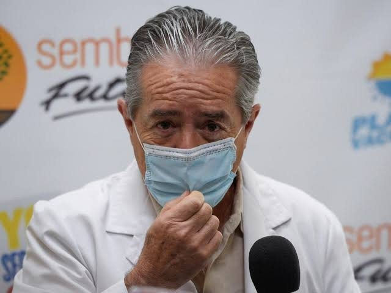
Hubo un segundo detalle. Ecuador tiene un Banco Nacional de Vacunas con 45 años de campañas masivas y protocolos probados. El Ministerio decidió no usarlo y guardar las dosis en el centro de salud de Chimbacalle, en Quito. Las fuentes de La Posta sostienen que fue deliberado: es más fácil presionar a las enfermeras de un centro de salud para desviar viales que hacerlo con el Banco de Vacunas. Y un tercero: el sistema informático donde se registraban las dosis mezclaba la vacuna contra el covid con las de sarampión o influenza, sin diferenciarlas, lo que complicó después cualquier investigación. El mecanismo funcionaba por zonales: cada director de zona sabía el chanchullo de su zona y nadie el completo.
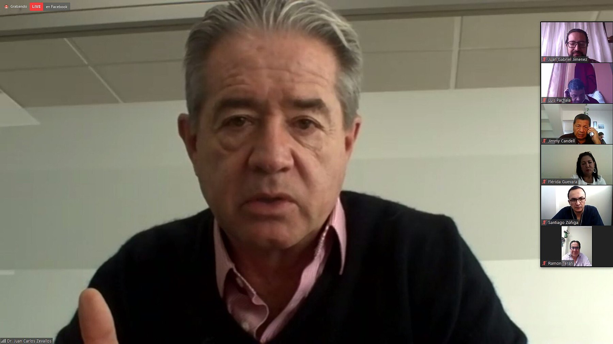
El 22 de enero, cuarenta y ocho horas después de arrancar, recibieron su dosis en el Palacio de Carondelet la primera dama, Rocío González de Moreno, una asistente y un gestor de la Presidencia, con un vial de más: seis dosis para seis personas que el Gobierno nunca identificó y que dijo que eran personal de la residencia presidencial, como cerco epidemiológico. Ese mismo día cinco ministros y dos viceministros entraron con sus cónyuges por el subsuelo del hospital Pablo Arturo Suárez hasta un consultorio: Jarrín, Mauricio Pozo, René Ortiz, Julio Recalde, Rosa Prado de Holguín, Zevallos y su viceministro Rodolfo Farfán. El 23 de enero, en las suites de los Valles y en la residencia Senior Suites donde vivía la madre del ministro, se vacunaron el expresidente Osvaldo Hurtado, el consultor político Jaime Durán Barba y su hermano Rodrigo, el exministro de Finanzas Pablo Better, abogados y empresarios, y la madre y la suegra de Zevallos; de 28 vacunados en Los Valles, solo 14 eran médicos o enfermeras. A mediados de febrero, cuatro dosis extra en el Hospital Metropolitano fueron para los suegros del gerente de Teleamazonas y un allegado. El 25 de febrero, en Chimbacalle, los radiodifusores Gonzalo Rosero, Diego Oquendo y Emilio Najas y el dirigente Rodrigo Paz con su esposa, con una lista de quince nombres firmada por una empresaria del comité público-privado que disponía de viales públicos. El ministro admitió que se habían vacunado personas fuera de los grupos prioritarios. Se negó a decir quiénes. Renunció el 26 de febrero y al día siguiente voló a Miami.
El Ministerio había mezclado con habilidad a quienes merecían la vacuna, enfermeras y médicos de los centros de salud, con sus invitados. No había un archivo con cien mil vacunados. La Posta reconstruyó la lista según los lugares donde se aplicaron las dosis y según lo que recordaban directores y médicos que colaboraron de forma anónima, con documentos de respaldo. Dos jornadas hasta las tres de la mañana para identificar nombre por nombre. La Posta decidió no publicar la lista íntegra: separó a los VIP de los que sí tenían derecho.

El 19 de marzo de 2021 salió la primera parte, con Boscán y Jefferson Sanguña en el estudio y Mónica Velásquez en el equipo que identificó nombre por nombre hasta las tres de la mañana. Al menos doce funcionarios del Gabinete y sus familiares, el expresidente Hurtado, Durán Barba, que para entonces asesoraba la campaña de Guillermo Lasso, el asistente presidencial Fredy Miño, la asesora Liz Giler, el jefe de seguridad presidencial Carlos Sarmiento, empresarios, académicos y el dirigente Rodrigo Paz. También los que no tenían vacuna: el recolector de Emaseo, el bombero paramédico de Guayaquil, dos laboratoristas que perdieron familiares. La vicepresidenta María Alejandra Muñoz había dicho el día anterior que quien se saltó la fila tenía que ser separado. Moreno había dicho que ninguno de sus familiares, ni sus padres, se vacunó. No mencionó a su esposa. Ese mismo día el Gobierno separó al ministro Rodolfo Farfán, que llevaba 19 días en el cargo y figuraba en la lista del 22 de enero como viceministro; el secretario de Gabinete Jorge Wated pidió a todos los ministros informar en seis horas si estaban vacunados, y el sábado 20 publicó la lista.
Primera dama
22 ene 2021 · Palacio de Carondelet, refuerzo el 18 de febrero
Cuarenta y ocho horas después de que aterrizara el primer lote. Ese día se usó un vial de más: seis dosis para seis personas que el Gobierno nunca identificó y que dijo que eran personal de la residencia presidencial.
La noche del 18 de marzo dijo que nadie de su círculo familiar, ni sus padres, se había vacunado. No mencionó a su esposa. Su ministro de Gobierno lo justificó después: la esposa obviamente tiene que vacunarse.
Residencia Senior Suites, Ribera del Río
23 ene 2021
La Contraloría contó 36 dosis del hospital Pablo Arturo Suárez aplicadas en ese edificio, entre nueve residentes y nueve trabajadores.
Admitió que se vacunaron personas fuera de los grupos prioritarios y se negó a decir quiénes. Renunció el 26 de febrero y al día siguiente voló a Miami. Desde Estados Unidos habló de tal vez una equivocación al invitar a personas y de un linchamiento político y mediático.
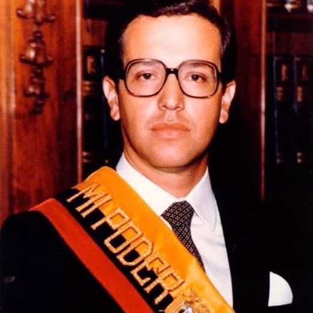
Expresidente de la República
23 ene 2021 · Hospital de los Valles
De 28 vacunados ese día en Los Valles, solo 14 eran médicos o enfermeras.
El Gobierno invitó a expresidentes, candidatos y 17 rectores; la investigación tiene que terminar en archivo.
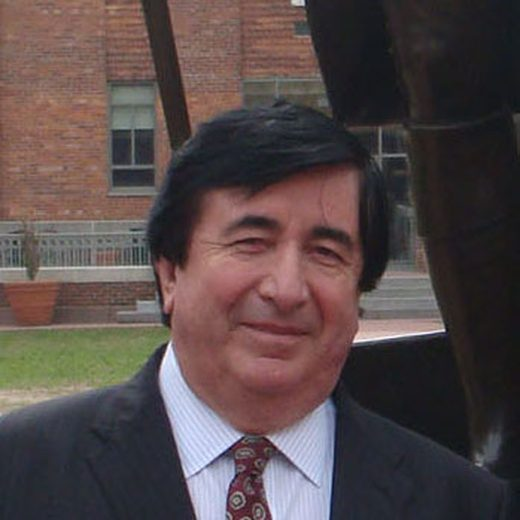
Consultor político
23 ene 2021 · Hospital de los Valles
Para entonces asesoraba la campaña presidencial de Guillermo Lasso.
No pudo explicar por qué se entregaron 15.000 nombres a la Fiscalía si había 87.000 vacunados; dijo que las listas no se publican por prohibición constitucional y que se hablaba de 10 o 15 personas cuestionables.
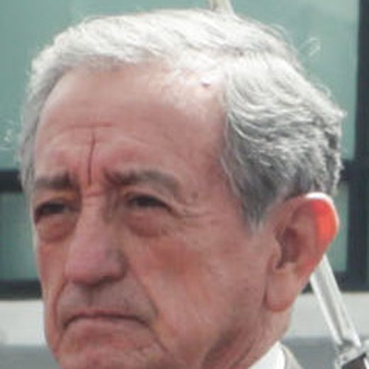
Ministro de Defensa
23 ene 2021 · Hospital de los Valles
La Contraloría contó 15 dosis para ocho ministros y sus cónyuges y 18 para doce funcionarios de la Presidencia.
La vacunación del Gabinete siguió recomendaciones de la OMS. Carondelet no tiene cocineras: se vacunó a tres personas de la residencia presidencial como cerco epidemiológico. La vicepresidenta conoció las listas por la prensa.
Viceministro de Salud y, después, ministro durante 19 días
22 ene 2021 · Pablo Arturo Suárez
Figuraba como viceministro en la lista del 22 de enero. El 19 de marzo, horas después de la primera entrega, el Gobierno lo separó del cargo: la publicación tumbó al ministro de Salud el mismo día.
Solo Carondelet podía autorizar una vacunación VIP a través del ministro; la Vicepresidencia estaba informada de toda la logística. Su padre, médico de 87 años, no estaba vacunado.
Fotos vía Wikimedia Commons. Rocío González de Moreno: LasManuelas2018 (CC BY-SA 4.0); Osvaldo Hurtado: Enciclopedia del Ecuador (CC0); Jaime Durán Barba y su hermano Rodrigo: Gobierno de la Ciudad de Buenos Aires (CC BY 2.0); Oswaldo Jarrín: https://www.flickr.com/photos/asambleanacional/42280117082/ (CC BY-SA 2.0).
El 22 de marzo llegó la segunda parte: la lista íntegra de la vacunación masiva en el Club Rotario de Guayaquil, más de 500 nombres de la alta sociedad guayaquileña, casi una quinta parte menores de 65 años y una decena nacidos entre 1991 y 1999, con el exvicepresidente León Roldós, un exministro de Gobierno, un exmagistrado y directivos universitarios; los rotarios pidieron mil dosis y recibieron quinientas mientras al Teodoro Maldonado Carbo no llegaba la mitad. Al día siguiente La Posta rectificó dos nombres y el Ministerio abrió una investigación por suplantación de identidad: estar en la lista no era lo mismo que estar vacunado. El 23, el audio: Gabriela Gómez, asesora jurídica de Zevallos, el director médico y el gerente del Pablo Arturo Suárez, grabados al día siguiente de la renuncia del ministro: decimos o no decimos; que no; yo hice lo que hice por órdenes verbales de ustedes; la vacunación de los ministros es un pedido del despacho de Presidencia; esto ya lo conoce la vicepresidenta. El 24, el ministro de Gobierno Gabriel Martínez vino a responder: no podía explicar por qué entregaron 15.000 nombres a la Fiscalía si había 87.000 vacunados. El 25, Rafael Tamayo, exasesor de Zevallos: solo Carondelet podía autorizar una vacunación VIP y la Vicepresidencia estaba informada de toda la logística. El Defensor del Pueblo pidió a la Fiscalía investigar. El reemplazo de Farfán, Mauro Falconí, duró 19 días: renunció el 7 de abril tras el caos de la vacunación de adultos mayores en Quito, pidió con notarios un arqueo de vacunas cuyas cifras no le cuadraban, despidió a los directores zonales y en Café la Posta señaló al comité que presidía la vicepresidenta María Alejandra Muñoz, con la gerente de CNT Martha Moncayo, como el que rompió los criterios técnicos del plan.
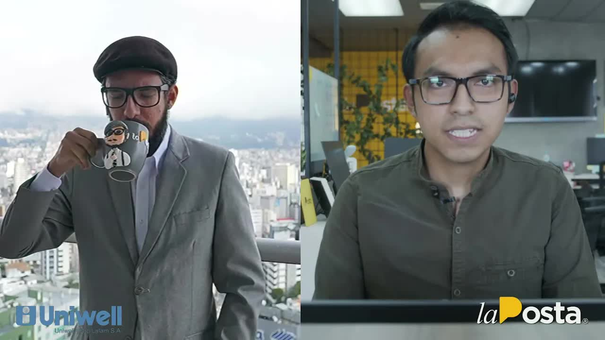
Muy hábilmente, el Ministerio de Salud de Juan Carlos Zevallos mezcló a personas que sí merecían la vacuna, los enfermeros, los médicos de primera línea, con sus invitados VIP.
Andersson Boscán, Café la Posta, 19 de marzo de 2021
En junio de 2021 la Contraloría General del Estado publicó su examen especial al proceso de vacunación entre el 1 de agosto de 2020 y el 17 de marzo de 2021 y confirmó lo esencial: 67 personas ajenas a los grupos prioritarios se vacunaron en la fase cero. En el hospital Pablo Arturo Suárez de Quito, de 450 dosis solo 285 fueron a personal de primera línea; 102 se repartieron a discreción entre 56 personas y 36 fueron a nueve residentes y nueve trabajadores de la residencia Senior Suites, en Ribera del Río, donde vivía la madre de Zevallos.
Según el informe, 15 dosis fueron para ocho ministros y sus cónyuges y 18 para doce funcionarios de la Presidencia; La Posta había ubicado al Gabinete en el subsuelo del Pablo Arturo Suárez. En el Carlos Andrade Marín se vacunó personal administrativo, incluida la directora de comunicación. El informe no reveló todos los nombres. La Posta ya los había publicado.
La Fiscalía abrió la indagación previa 04-2021 el 29 de enero de 2021, por tráfico de influencias, tras una denuncia del 26 de enero; el 17 de marzo allanó una dependencia del Ministerio en el sur de Quito, después de pedir tres veces la lista sin recibirla completa. Zevallos rindió versión el 1 de febrero. Los denunciantes pidieron medidas para impedir su salida; ninguna se dictó y salió el 27 de febrero sin impedimento legal, como recordó su abogado. El 22 de marzo, desde Estados Unidos, respondió con un comunicado: admitió tal vez una equivocación al invitar a personas y habló de un linchamiento político y mediático. Nunca fue vinculado formalmente al proceso. El 5 de mayo de 2021 la Asamblea lo censuró con 129 votos y lo inhabilitó por dos años para ejercer cargos públicos, por incumplimientos en la compra de vacunas y en el plan. En septiembre de 2022 estaba de vuelta en Ecuador dando conferencias.
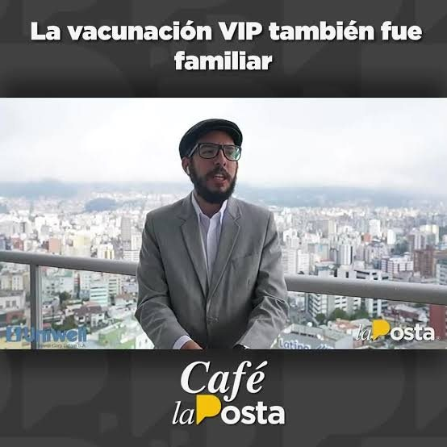
La Posta reveló también lo que decían los contratos reservados. AstraZeneca, firmado el 28 de octubre de 2020 por Zevallos: cinco millones de dosis a 4 dólares, revisables al alza hasta 6, sin sanción por incumplir el cronograma y con el Gobierno responsable por la vida útil de las vacunas. Había comprometido 390.000 dosis en marzo, 770.000 en abril, 770.000 en mayo y 710.000 en junio de 2021; al 21 de junio había entregado 614.000, el 25 por ciento. Pfizer, firmado el 23 de diciembre de 2020: dos millones de dosis a 2 dólares, tampoco sancionable por demoras; había enviado 1,4 millones. Al cierre de junio habían llegado al país 4.814.989 vacunas de todas las marcas y 1.681.602 seguían sin aplicarse. El Ministerio anunció el 25 de marzo un acuerdo con el Municipio de Guayaquil para el acceso a 1,8 millones de dosis, que Zevallos y Farfán no habían querido firmar.
Ninguno de los vacunados VIP fue sancionado. La vicepresidenta que pidió separarlos no separó a nadie; su nombre apareció en el audio, en la versión de Tamayo y en la de Falconí, y ella lo negó: conoció las listas por la prensa. El Gobierno de Moreno terminó el 24 de mayo de 2021 con Camilo Salinas como sexto ministro de Salud; Zevallos, Farfán y Falconí cayeron en seis semanas. En cuatro meses Moreno aplicó 1,9 millones de vacunas; Lasso, 1,2 millones en sus primeras cuatro semanas. Alfonso Espinosa de los Monteros, el presentador, esperó cinco horas en la fila para la suya.
Actualizado el 5 de septiembre de 2026
8.190 dosis de Pfizer.
La primera dama en Carondelet; el Gabinete por el subsuelo del Pablo Arturo Suárez; Hurtado, Durán Barba y la madre del ministro en Los Valles.
Radiodifusores y políticos con los viales sobrantes, según una lista firmada por una empresaria.
Se presenta la denuncia por tráfico de influencias contra Zevallos.
La Fiscalía abre el expediente 04-2021.
Nunca será vinculado.
Renuncia el viernes; el sábado vuela a Miami.
La Fiscalía entra a una dependencia del Ministerio en el sur de Quito.
Dos docenas de nombres verificados en Café la Posta. El Gobierno separa al ministro Farfán ese día.
La lista íntegra del Club Rotario: más de 500 nombres. Zevallos habla de linchamiento.
El tercer ministro en seis semanas. Señala al comité de la vicepresidenta.
129 votos e inhabilitación por dos años.
67 personas ajenas a los grupos prioritarios.
Da conferencias en Ecuador. Sin proceso.
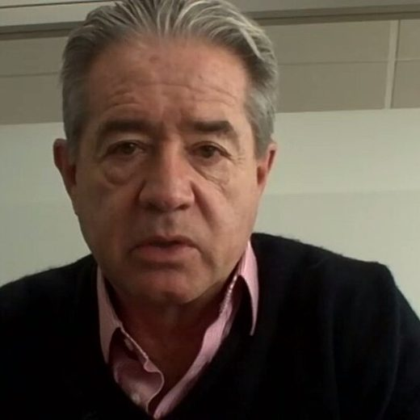
Ministro de Salud hasta febrero de 2021.
Primera dama.
Ministro de Defensa.
Sucesor de Zevallos en Salud.
Vicepresidenta. Pidió separar a quien se saltó la fila.
Ministro de Salud durante 19 días.
Fotos vía Wikimedia Commons. Juan Carlos Zevallos: Asamblea Nacional del Ecuador (CC BY-SA 2.0); Rocío González de Moreno: LasManuelas2018 (CC BY-SA 4.0); Oswaldo Jarrín: https://www.flickr.com/photos/asambleanacional/42280117082/ (CC BY-SA 2.0).
Dijo la noche del 18 de marzo que nadie de su círculo familiar, ni sus padres, se había vacunado. No mencionó a su esposa, vacunada el 22 de enero en Carondelet. Después dijo que en las últimas 72 horas pensaba que existía un plan. Su ministro de Gobierno lo justificó: la esposa obviamente tiene que vacunarse.
Admitió vacunaciones fuera de los grupos prioritarios y se negó a divulgar los nombres. Renunció y abandonó el país.
Solicitó a la Fiscalía investigar la lista revelada por La Posta.
Carondelet no tiene cocineras; se vacunó a tres personas de la residencia presidencial como cerco epidemiológico. La vacunación del Gabinete siguió recomendaciones de la OMS. La vicepresidenta conoció las listas por la prensa.
No pudo explicar por qué se entregaron 15.000 nombres a la Fiscalía si había 87.000 vacunados; las listas no se publican por prohibición constitucional. Hablamos de 10 o 15 personas cuestionables.
Su cliente no huyó: no tenía prohibición de salida. El Gobierno invitó a expresidentes, candidatos y 17 rectores; la investigación tiene que terminar en archivo.
Solo Carondelet podía autorizar una vacunación VIP a través del ministro; la Vicepresidencia estaba informada de toda la logística. Su padre, médico de 87 años, no estaba vacunado.
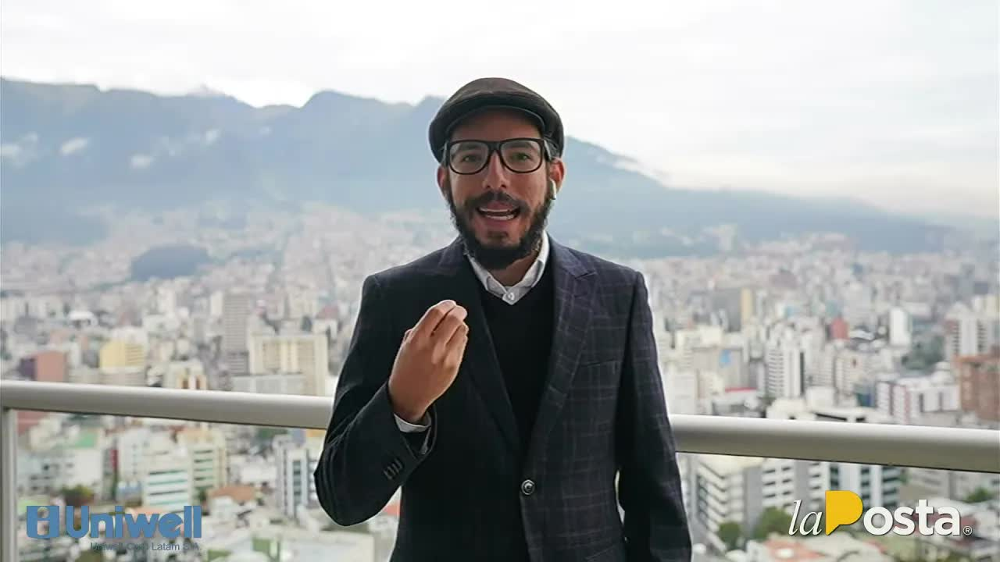
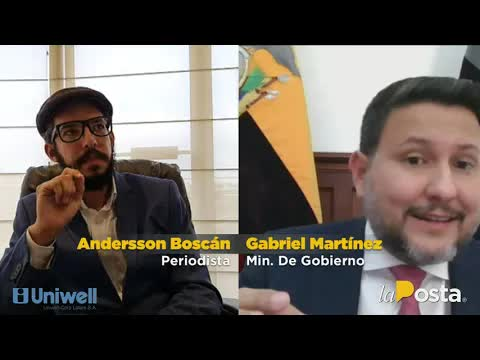
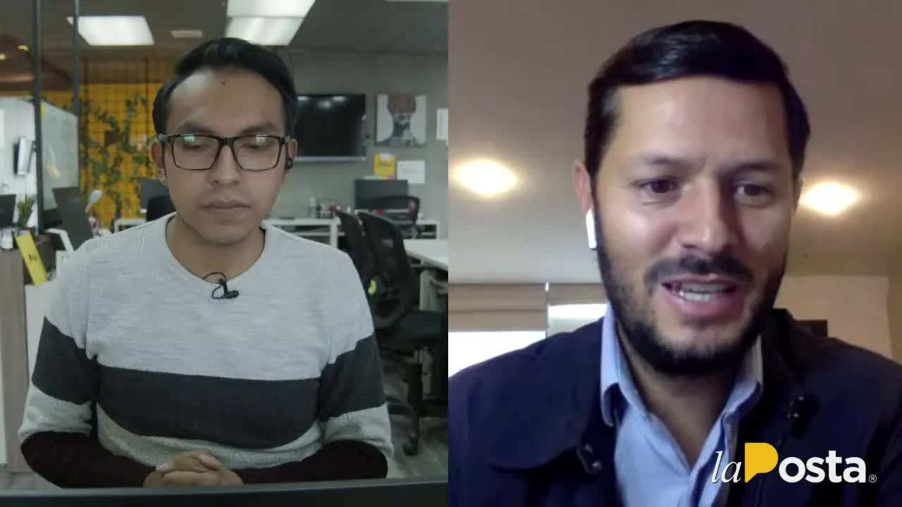
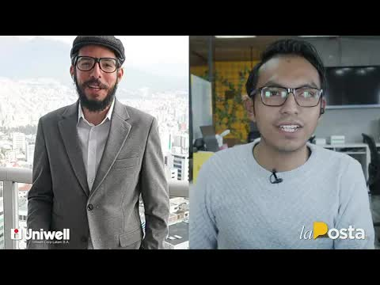
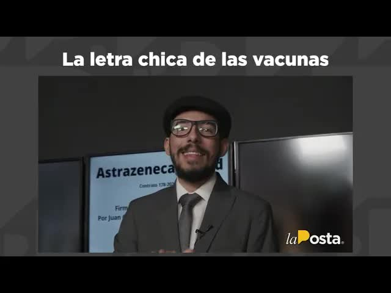
ciudadanía ha estado buscando desde que arrancara el 21 de enero el proceso de vacunación y que finalmente ha empezado a cuentagotas a surgir desde la redacción de la posta me acompaña y expresión sanguña jeff muy buenos días mantengan todos ustedes muy buenos días así es hemos podido acceder a una primera parte de la lista de los vacunados vip lo que les hemos publicado el día de ayer y lo que les hemos prometido as…
Leer la transcripción completapara desde junio 2021 artefacta facilita tu vida así que ya sabes los mejores descuentos están en artefacta y aprovecha esos increíbles ofertas y descuentos hasta el día de hoy visita todos sus locales sin más lo prometido es deuda así que vamos a hacer una revisión hacer una revisión pero la segunda parte de los vacunados esto es en caliente muchísimas gracias por seguir conectados a la señal de la posta yo soy jeff…
Leer la transcripción completala lista de vacunados el problema es que están en la lista pero están la lista no es lo mismo que ser vacunado al parecer esto parece inconcebible y quiero explicarlo bien la posta no ha tenido acceso solamente a la orden de vacunación pongamos la imagen llamaría estas son las personas a los que nos referíamos la canciller de la universidad casa grande el ex ministro del gobierno el primer vocal del club sport emelec…
Leer la transcripción completapor supuesto usted está aquí porque hay una lista de los que se han vacunado así que vamos a entrar el tema directamente en nuestros martínez el plan de vacunación que calificación de merece del 1 al 10 que tanto han metido la pata en el gobierno nacional creo que hay errores lamentables hay errores lamentables que tienen que ser corregidos creo que es responsabilidad de los ministros anteriores las situaciones que e…
Leer la transcripción completasin más y hasta que tratamos de solucionar los problemas técnicos con anderson vamos a hacer una revisión de los hechos esto es en caliente en caliente en caliente les contamos bueno la primera noticia llega gracias a sánchez garcía y asociados del bufete tributario que permite que todo el equipo de la poste esté tranquilo y no tenga ningún inconveniente con él ese era la primera noticia tiene que ver con el presiden…
Leer la transcripción completaa los ganaderos vamos con la siguiente noticia y tiene que ver con esta polémica por el proceso en la inscripción de la de las vacunas de la vacunación para las personas de la tercera edad y es que no termina de ser esto gracioso ya está indignante porque el presidente de lenin moreno daba a uno de sus de sus habituales programas de frente con el presidente que de frente no tiene nada porque poco nada se ve que de co…
Leer la transcripción completatodos los medios de comunicación por todo lo que sucedió respecto a la vamos a hacer un evento cronológico pero esto era lo que sucedía para que se vaya desencadenando una serie de hechos que terminarían con la renuncia del ex ministro ahora el señor mauro falconí vamos a ver el primer vídeo que ponemos en pantalla y después conversamos al respecto ah luego de las 4 de la tarde este era uno de los tantos vídeos que c…
Leer la transcripción completacosas vamos a ver entonces cuántas vacunas hemos aplicado y quién ha aplicado más vacunas en el gobierno de lenin moreno se aplicaron un millón 946 346 vacunas en el gobierno de guillermo lasso 1.187.000 41 vacunas ok lenin aplicó más vacunas que lazó en más tiempo que las porque estamos comparando cuatro meses de lenin moreno contra cuatro semanas de guillermo lasso aunque también sí pero con la última actualización…
Leer la transcripción completaTranscripciones de los subtítulos automáticos de cada programa. No están corregidas a mano: sirven para buscar una frase y llegar al minuto exacto del video, no como cita textual literal.
Farfán cayó el día de la primera entrega; Falconí, 19 días después.
Zevallos volvió al país. Ningún vacunado VIP fue sancionado.
Los 45 segundos del COSEPE que contradijeron al presidente durante el secuestro de los tres periodistas
2019Pruebas de VIH falladas y compras podridas en el Ministerio de Salud
2020Hospitales públicos a cambio de votos en la Asamblea
La lista completa del Club Rotario se publicó en las redes de La Posta el 22 de marzo de 2021, sin cédulas ni historial médico. Aquí se reproducen los nombres que los programas dieron al aire y que la prensa nacional confirmó.